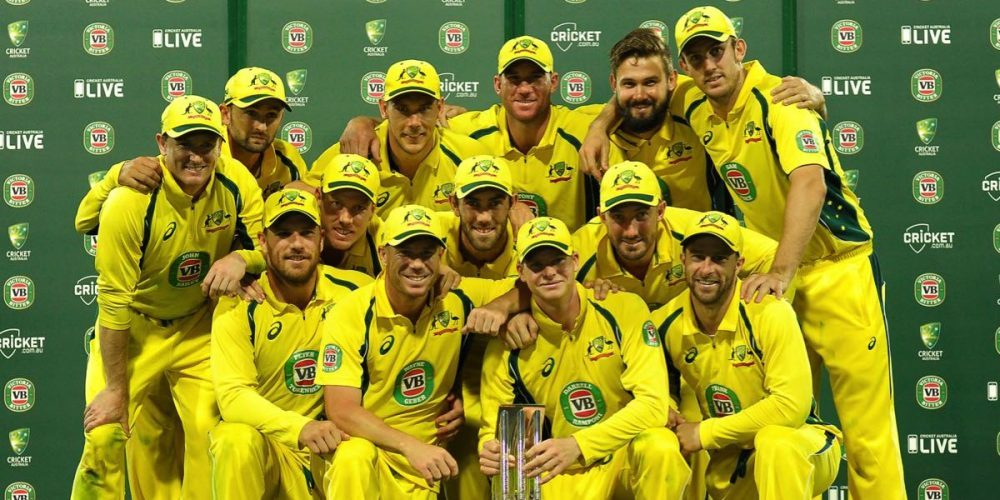

My favourite hobby is cricket, I like playing it in my free time and go to training once or twice a week. I like both batting and bowling because in bowling you can get wickets and in batting you can hit the ball far away with the bat. I am in 7th grade and started playing when I was 6, I started playing for a club at 9 years old. And since then I have loved playing cricket and it is my favourite sport to play. I also like watching cricket, I mostly watch India or Australia play cricket on the TV.
The Australia men's national cricket team represents Australia in men's international cricket. As the joint oldest team in Test cricket history, playing in the first ever Test match in 1877. My favourite team in cricket is Australia, Australia is my home country and I love watching them play. Their uniform colours are yellow and green and are really good at cricket. They take part in the ashes where every year Australia and England vs eachother, the winner gets the ashes of the bails burnt from the first match they played.
